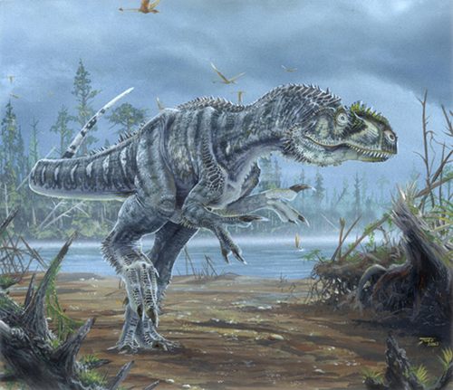

Об Аллозавре

Аллозавр (Allosaurus fragilis) - крупный хищный динозавр, живший около 155-145 миллионов лет назад в конце юрского периода.
Название "Allosaurus" означает "странный ящер" и было дано из-за необычного строения его позвонков.
Читать больше на ВикипедииАнатомия
- Длина 8-12 метров
- Вес 1-2 тонны
- Крупная голова с десятками острых зубов
- Мощные трёхпалые передние лапы
Среда обитания
- Северная Америка (формация Моррисон)
- Западная Европа
- Полузасушливые равнины
- Обитал 155-145 млн лет назад
Рацион
- Крупные зауроподы (диплодоки, апатозавры)
- Стегозавры
- Более мелкие динозавры
- Возможна стайная охота
Удивительные факты об Аллозавре
Топ-хищник своей эпохи
Аллозавр был доминирующим хищником Северной Америки до появления тираннозавров
Охотничьи тактики
Возможно охотился стаями, чтобы атаковать гигантских зауропод
"Лев юрского периода"
Занимал экологическую нишу, аналогичную современным львам
Грозное оружие
Имел острые как бритва зубы и мощные когти на передних лапах
Частые травмы
На многих ископаемых останках видны следы переломов и повреждений от схваток
Популярность в культуре
Аллозавр часто появляется в фильмах и книгах как типичный "плохой" динозавр